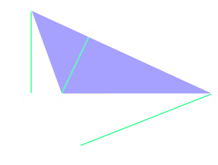

Triangoli
Definizione 2.1.1.. Un triangolo è un insieme di punti del piano costituito da una poligonale chiusa di tre lati e dai suoi punti interni. □
I punti estremi dei tre lati si chiamano vertici del triangolo
Un vertice del triangolo viene detto opposto a un lato se non appartiene al lato stesso. Per es. l'angolo  è opposto al lato BC.
Gli angoli convessi individuati da ciascuna delle coppie dei lati del triangolo vengono detti angoli interni (o semplicemente angoli) del triangolo e spesso si indicano utilizzando solo la lettera al vertice (per es. Â). Essi hanno per vertice del triangolo e per lati le semirette che contengono i lati del triangolo.
Un asngolo interno è compreso fra due lati quando i lati dell'angolo contengono i due lati del triangolo.
Un angolo interno è adiacente a un lato quando uno dei due lati dell'angolo contiene quel lato del triangolo.
Per ogni lato di un triangolo ci sono due angoli adiacenti.
Gli angoli esterni di un triangolo sono quelli adiacenti agli angoli interni. Per ogni angolo interno di un triangolo ci sono due angoli esterni a esso corrispondenti.
Per disegnare un angolo esterno occorre prolungare uno dei due lati del triangolo che individuano l'angolo interno. L'angolo esterno è quello compreso fra il prolungamento e l'altro lato.
Segmenti notevoli
Definizione 2.1.2. In un triangolo, la bisettrice di un angolo è il segmento, formato dai punti della bisettrice dell'angolo che appartengono al triangolo, che ha come estremi un vertice del triangolo e il punto di intersezione con il lato opposto. □
Definizione 2.1.3. In un triangolo, la mediana relativa ad un lato è il segmento che ha per estremi il punto medio del lato stesso e il vertice opposto a quel lato. □
Definizione 2.1.4. In un triangolo, l'altezza relativa a un lato è il segmento che ha un estremo nel vertice opposto al lato e l'altro estremo sul lato stesso (o sul suo prolungamento) preso in modo da formare due angoli retti. □
L'altezza può essere un segmento esterno al triangolo. Coò non è mai vero per la bisettrice e la mediana.
Spesso si pone l'attenzione su un solo lato e sulla relativa altezza. In questo caso si è soliti chiamare base il lato.
Questo non deve far dimenticare che le altezza di un triangolo, così come le bisettrici e le mediane, sono tre.
Nel triangolo rettangolo due altezze coincidono con i cateti, mentre la terza, quella relativa all’ipotenusa, è interna al triangolo (AH).
Nel triangolo ottusangolo due altezze cadono all’esterno del triangolo; per costruirle, è necessario tracciare la retta passante per quel lato, prolungandolo opportunamente.
Classificazione dei triangoli rispetto ai lati
sUn triangolo si può classificare rispetto alla lunghezza dei lati, come
un triangolo si dice equilatero se ha i tre lati congruenti;
un triangolo si dice scaleno se ha i tre lati non congruenti tra loro;
un triangolo si dice isoscele se ha due lati congruenti;